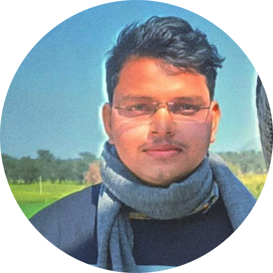
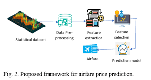
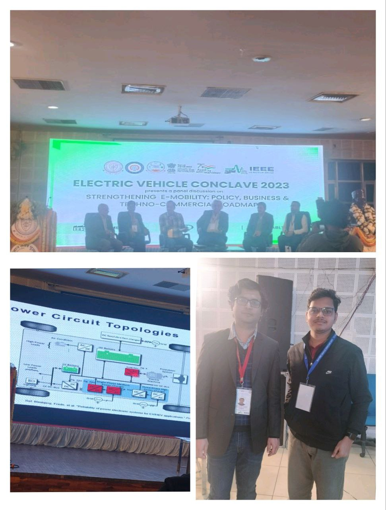
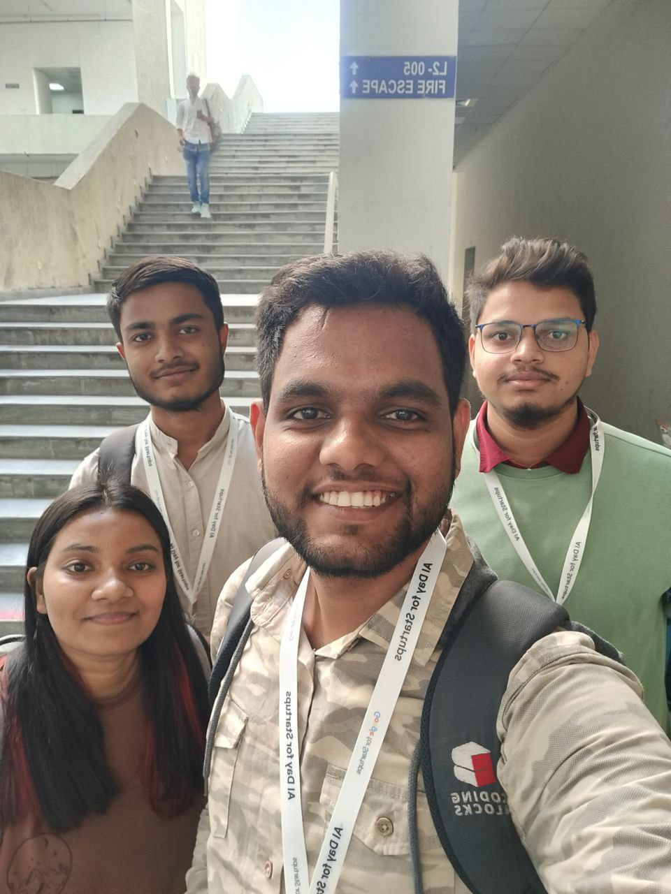
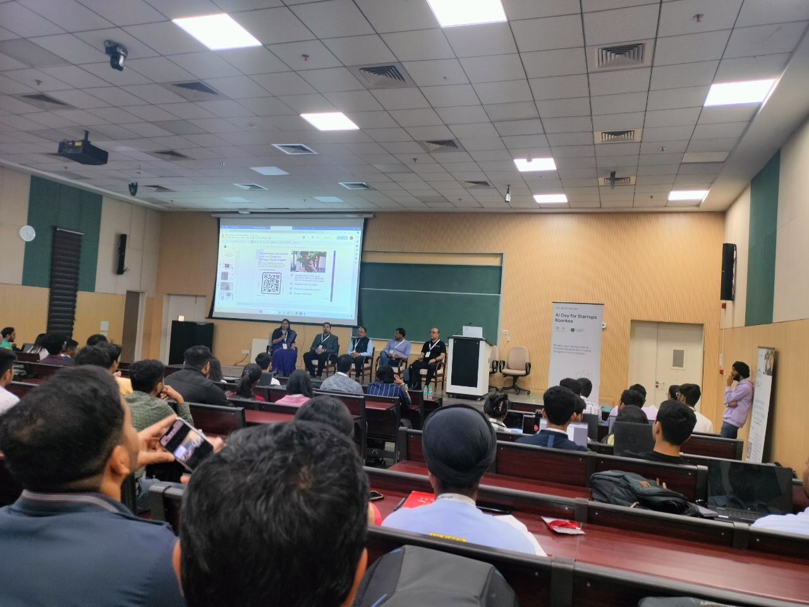

|
A dedicated Machine Learning researcher and developer with a strong foundation in AI-driven systems, deeply committed to advancing state-of-the-art methodologies in Machine Learning and Artificial Intelligence. My core interests lie at the intersection of Electrical and Computer Engineering, with a focused engagement in Computer Vision, Federated Learning, and Distributed Learning frameworks. I am driven by a relentless pursuit of knowledge and innovation, aiming to architect scalable, intelligent systems capable of solving real-world, high-complexity problems. My work is fueled by a passion for pushing the boundaries of computational intelligence and contributing to impactful, next-generation AI solutions. Outside the academic realm, I actively document and share my technical exploration through insightful blogs, breaking down sophisticated ideas into digestible knowledge for the broader tech community. I’m inspired by the ambition to craft intelligent, AI-powered systems that address real-world issues and leave a tangible mark on society. Contact Me:

|
||||||||||||||||||||||||||||||||||||||
Experience
Education
Skills
|
||||||||||||||||||||||||||||||||||||||
Publications & Contributions
Projects
Federated Learning: Edge-Cloud Collaborative FrameworkDeveloped a cutting-edge federated learning system integrating a hybrid LSTM-Transformer architecture with optimized aggregation algorithms such as FedAvg, HeteroFL, and OATS. This edge-cloud collaborative framework enhanced model accuracy by 18.8% while significantly reducing cloud idle times by 74.5%, facilitating efficient distributed AI training. Technologies: Python, TensorFlow, PyTorch, TensorFlow Federated, Docker, Kubernetes Courtesy: AI Lab, IIT Patna

Flight Fare Prediction Using Machine LearningEngineered a robust flight fare prediction model leveraging a comprehensive Kaggle dataset. Executed advanced data preprocessing including missing value treatment and feature engineering. Implemented ensemble models such as Random Forest, XGBoost, and Gradient Boosting, evaluated with RMSE, MSE, and R² to ensure precision. Technologies: Python, Scikit-learn, XGBoost 
Real-Time Moving Object Detection Using FPGA and Jetson NanoDesigned and deployed a high-performance real-time object detection system combining FPGA acceleration with NVIDIA Jetson Nano. Employed YOLO and Vision Transformer (ViT) models for accurate and rapid detection and tracking in dynamic environments, substantially enhancing surveillance capabilities. Technologies: Python, NVIDIA Jetson Nano, YOLO, Vision Transformers, OpenCV Courtesy: IIT Roorkee 
Battery Management System Using ArduinoDeveloped an Arduino-based battery management system to monitor State of Health (SoH) and State of Charge (SoC) using multiple sensors including current, voltage, and temperature. Incorporated an LCD for real-time display and implemented load testing via motors. Proposed an SoH estimator tailored for lead-acid batteries. Technologies: Arduino, C++, LCD Display, Sensors (Voltage, Current, Temperature) 
Real-Time GPS Monitoring Using ArduinoCreated a GPS-based tracking system for real-time monitoring of individuals and assets, enabling precise location identification. The system enhances security, safety, and logistics management with continuous location updates. Technologies: Arduino, GPS Module, C++ Conferences and Workshops

Electric Vehicle Conclave @ IIT BHUParticipant - Attended "Driving the Future: Confluence of Data Analytics and Electric Vehicles." Date: March 2024

Workshop on AI Startup by GoogleCertificate of Participation - Engaged in sessions focused on AI startup strategies. Date: December 2023

Cognizance 2024 GEN AI Hackathon - 3rd RankParticipation in Gen AI Hackathon focused on next-generation AI solutions. Date: March 2024 Courses
Awards and Achievements
|